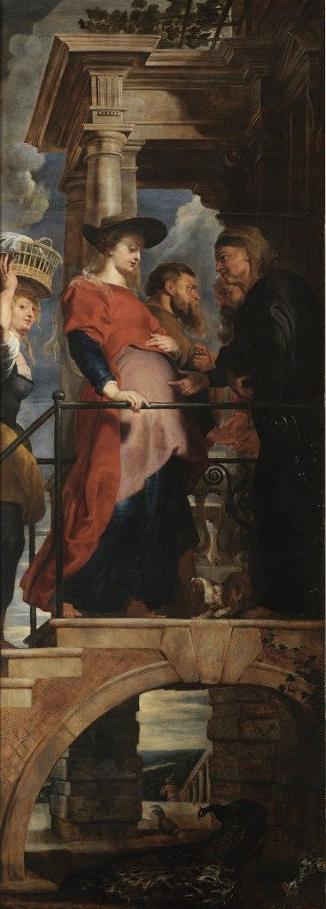

Acorn Academy · Saint and Bible Story Identification · Luke 1:39–56
The Bible Story — Retold
A child-friendly original retelling, not a substitute for the Gospel text.
After the angel Gabriel announced that Mary would have a son named Jesus, he told her something else remarkable: Mary's relative Elizabeth was also expecting a baby. Elizabeth and her husband Zechariah were elderly, and they had long believed they would never have a child. Gabriel said Elizabeth was already in her sixth month.
Mary traveled quickly to a town in the hill country of Judah. She entered Zechariah's house and greeted Elizabeth. The visit was a meeting of two relatives, but the Gospel of Luke gives it a deeper significance: both women were expecting children whose lives would become closely connected.
When Elizabeth heard Mary's greeting, the baby in her womb leaped. Luke says Elizabeth was filled with the Holy Spirit. Elizabeth greeted Mary with joy, called her blessed among women, and wondered why the mother of her Lord had come to her. She praised Mary for believing what God had promised.
Mary responded by praising God in a song known as the Magnificat. She spoke about God's greatness, care for those who are humble or hungry, and promise to Israel. The song appears in Luke 1:46–55. It is Mary's own response to God's work, not a speech made by Elizabeth.
Luke says Mary stayed with Elizabeth for about three months before returning home. Elizabeth later gave birth to John the Baptist. John would prepare the way for Jesus and, when both had grown older, baptize him in the Jordan River.
Visitation paintings usually emphasize the greeting between the women. Often Mary is shown as the younger traveler and Elizabeth as an older expectant woman. They may embrace, clasp hands, or reach toward each other's pregnancies. Their clothing colors, exact poses, and which side they stand on vary widely between artists.
Some paintings also include Zechariah, Elizabeth's husband; servants or attendants whose names are not known; saints who were added for devotion; or even a second episode from the Bible. Such artistic choices can help tell a larger story, but they are not all details stated in Luke 1:39–56.
Key identification rule: Mary is not always on the left, Elizabeth is not always on the right, and clothes are not reliable enough by themselves. Identify the greeting and the women's roles.
Select two paintings to compare their images and identification clues. Look at their gestures, apparent ages, roles, and the people around them. You can open either image to see it larger.
Ask yourself: Which details changed? Which clues to Mary and Elizabeth still work? Can I identify the women without knowing the painting's title?
Look Closely: Details That Help Identification
These close-ups are details of the same paintings, not separate works. They help you see inscriptions, people and additional scenes that may be hard to notice in the full picture.
Mariotto Albertinelli — The Visitation (with predella scenes)
1503Uffizi Galleries, Florence
Two women embrace under a grand stone arch; a predella below connects the Annunciation, Nativity, and Presentation in the Temple.
Three paragraphs of art history
Albertinelli painted the Visitation in 1503, arranging the meeting beneath a carefully measured Renaissance arch. The two women fill the central space, making their embrace the focal point.
The Uffizi describes a predella beneath the main scene with the Annunciation, Nativity, and Presentation of Jesus. These are separate events in the Gospel story and should not be mistaken for different stages of the Visitation.
Mary and Elizabeth are not recognized by fixed robe colors. The meeting, their relative ages, and the context in Luke help identify them. The painting was commissioned for an oratory connected with devotion to the Visitation.
What this teaches: The central Visitation is simple and clear. The smaller painted scenes along its bottom trace other moments in Jesus' early life. Mary is the younger visitor, Elizabeth the older pregnant relative.
Carl Heinrich Bloch — The Meeting of Mary and Elizabeth
c. 1866Frederiksborg Castle Museum of National History, Denmark (verify exact object)
Elizabeth appears at the doorway above steps with arms opened wide; Mary is the younger figure coming to visit.
Three paragraphs of art history
The Danish painter Carl Bloch presents the Visitation in a vertical composition, emphasizing the distance across the steps rather than depicting the embrace at its climax.
The raised arms of the older woman express welcome; the younger visitor comes from below. This is the same event that other artists depict with two figures already embracing.
The painting is a valuable test of transferring recognition. If children only memorize that the older figure is on the right or that the women embrace, this composition challenges those shortcuts.
What this teaches: A powerful example where Mary and Elizabeth are not yet embracing. Identify the older expectant hostess and the younger arriving visitor through the unfolding action.
Domenico Ghirlandaio — The Visitation with Mary Jacobi and Mary Salome
1491Musée du Louvre, Paris
Mary bends toward a kneeling Elizabeth. Two additional named holy women stand at the outer edges, identified in the Louvre catalogue as Mary Jacobi (left) and Mary Salome (right).
Three paragraphs of art history
Domenico Ghirlandaio painted this altarpiece in 1491 for Lorenzo Tornabuoni's chapel in Florence. The scene is framed by a monumental classical arch.
The central pair is Mary, who bends to greet her older relative Elizabeth. Two further female saints flank them. The Louvre identifies the left saint as Mary Jacobi and the right as Mary Salome; the upper inscriptions are especially useful evidence for these identifications.
This painting teaches a historical skill: some figures cannot reliably be named from clothing alone. An inscription or documented dedication can identify someone more securely than a guessed attribute.
What this teaches: The Louvre records inscriptions on the arch naming the two side saints. Their names come from written evidence and the artwork's history, not uniquely identifiable dress or poses.
Giotto di Bondone — The Visitation (Scrovegni Chapel)
c. 1305–1306Scrovegni Chapel, Padua
Mary and Elizabeth embrace at the entrance to a building with other women nearby, showing the emotional encounter in a simple narrative style.
Three paragraphs of art history
Giotto painted the Visitation among scenes from Mary's life in the Scrovegni Chapel in Padua. The whole chapel organizes biblical stories into a larger sequence.
The women exchange an intimate greeting in front of a portico. The quiet gestures make their relationship more important than the surrounding architecture.
Other women in the scene are usually described as attendants. Their presence contributes to the story but is not proof that they are additional named saints.
What this teaches: The women may be accompanied by attendants; those women should not automatically be given names as saints.
c. 1528–1529Church of San Michele e Francesco, Carmignano
Mary and Elizabeth embrace in the foreground. Two women stand facing the viewer; their specific identities are not securely established.
Three paragraphs of art history
Pontormo's unusual arrangement places four monumental women against a narrow street. The two in profile embrace, while the figures behind them look directly toward us.
The bright and unexpected colors, elongated shapes and tightly interwoven arms distinguish this work from the balanced Renaissance scenes of Albertinelli and Ghirlandaio.
The two rear figures have been interpreted as attendants or symbolic doubles of Mary and Elizabeth. Their names are not securely established, making this painting ideal for learning to distinguish evidence from speculation.
What this teaches: The background figures have sometimes been interpreted as doubled images of the main women or attendants. We should not test them as named saints.
Light falls on the greeting between Mary and Elizabeth. Zechariah approaches with help at the left; other attendants and animals animate the scene.
Three paragraphs of art history
Rembrandt painted the Visitation in 1640, placing the action within a shaded courtyard. Unlike the bright Italian examples, most of the picture remains dark.
Light falls on the women, suggesting the importance of their meeting. Zechariah, Elizabeth's husband and father of John the Baptist, appears at the left, helped down steps by a younger figure.
The painting contains additional people and animals, including a peacock. In Christian art peacocks have sometimes been used to suggest immortality. They belong to the artist's symbolism, not a detail described by Luke.
What this teaches: The older man is identified as Zechariah through the Visitation setting and museum descriptions. Age or a beard alone is not enough to identify him.
Mary and Elizabeth stand together in a landscape; the future Baptism of Christ appears in the distant background.
Three paragraphs of art history
Raphael designed this Visitation for a chapel in L'Aquila, with workshop participation often acknowledged in accounts of its execution.
The two women occupy the foreground and share a tender greeting. The landscape behind them contains a second biblical episode: the future Baptism of Jesus by John the Baptist.
The artist thus shows events separated by decades in one composition. That artistic choice connects Elizabeth's unborn son with the work he will later perform, but it is not a single moment recorded by Luke.
What this teaches: John the Baptist is present in the background depiction as an adult, not physically beside the two pregnant women at their greeting.
Mary approaches Elizabeth outside her house after a journey through the hills; a small Zechariah can be seen in the background.
Three paragraphs of art history
Rogier van der Weyden places the Visitation outside a house in an open landscape, showing the road by which Mary may have traveled.
Mary and Elizabeth touch each other as they greet. A path winds through the hills and leads our eyes back toward the building, reinforcing Luke's account of Mary's journey.
The small figure of Zechariah appears outside Elizabeth's house in the background. Here his identification depends on the house and story context, not on a unique object.
What this teaches: Their gestures to each other's bodies emphasize the pregnancies. Zechariah is small and only identifiable using the setting and source record.
Peter Paul Rubens — The Visitation (wing of The Descent from the Cross)

Narrow original altarpiece wing
A narrow panel in Rubens's Descent from the Cross triptych shows Mary bearing the unborn Jesus when she visits Elizabeth.
Interesting theological comparison: the altarpiece's wider theme is bearing Christ. Reproduction is too narrow/low-resolution for new first-pass quiz images.
The Visitation follows the Annunciation and comes before Jesus' birth. John the Baptist is not yet born at the Visitation, but later baptizes Jesus; Raphael's painting makes that later event visible in the distance. The Magnificat also connects with our longer Annunciation reflection.